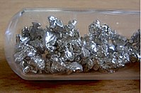

Numero atomico: 20
Massa atomica: 40,08
Temperatura di fusione (°C): 842
Temperatura di ebolizione (°C): 1484
Energia di prima ionizzazione (kj/mol): 590
Elettronegatività (secondo Pauling): 1,00
Densità: 1,53
Numeri di ossidazione: +2
Configurazione elettronica: 1s2, 2s2, 2p6, 3s2, 3p6, 4s2
Maggiori Informazioni